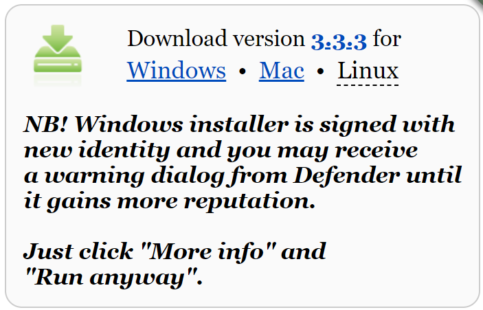
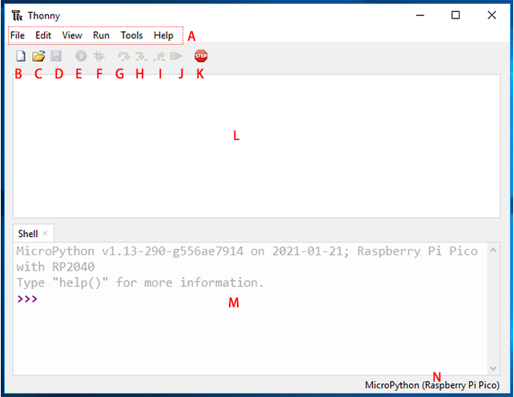

Install and Introduce Thonny IDE¶
Before you can start to program Pico with MicroPython, you need an integrated development environment (IDE), here we recommend Thonny. Thonny comes with Python 3.7 built in, just one simple installer is needed and you’re ready to learn programming.
Download from Web
You can download it by visiting the Thonny website: https://thonny.org/. Once open the page, you will see a light gray box in the upper right corner, click on the link that applies to your operating system.

Thonny IDE Introduction
Ref: realpython

A: The menu bar that contains the file New, Save, Edit, View, Run, Debug, etc.
B: This paper icon allows you to create a new file.
C: The folder icon allows you to open files that already exist in your computer or Raspberry Pi Pico, if your Pico is already plugged into your computer.
D: Click on the floppy disk icon to save the code. Similarly, you can choose whether to save the code to your computer or to the Raspberry Pi Pico.
E: The play icon allows you to run the code. If you have not saved the code, save the code before it can run.
F: The Debug icon allows you to debug your code. Inevitably, you will encounter errors when writing code. Errors can take many forms, sometimes using incorrect syntax, sometimes incorrect logic. Debugging is the tool for finding and investigating errors.
Note
The Debug tool cannot be used when MicroPython (Raspberry Pi Pico) is selected as the interpreter.
If you want to debug your code, you need to select the interpreter as the default interpreter and save as to your computer after debugging.
Finally, select the MicroPython (Raspberry Pi Pico) interpreter again, click the save as button, and re-save the debugged code to your Raspberry Pi Pico.
The G, H and I arrow icons allow you to run the program step by step, but can only be started after clicking on the Degug icon. As you click on each arrow, you will notice that the yellow highlighted bar will indicate the line or section of Python that is currently evaluating.
G: Take a big step, which means jumping to the next line or block of code.
H: Take a small step means expressing each component in depth.
I: Exit out of the debugger.
J: Click it to return from debug mode to play mode.
K: Use the stop icon to stop running code.
L: Script Area, where you can write your Python code.
M: Python Shell, where you can type a single command, and when you press the Enter key, the single command will run and provide information about the running program. This is also known as REPL, which means “Read, Evaluate, Print, and Loop.”
N: Interpreter, where the current version of Python used to run your program is displayed, can be changed manually to another version by clicking on it.
Note
NO MicroPython(Raspberry Pi Pico) Interpreter Option ?
Check that your Pico is plugged into your computer via a USB cable.
The Raspberry Pi Pico interpreter is only available in version 3.3.3 or higher version of Thonny. If you are running an older version, please update.